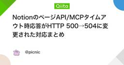
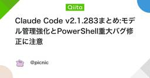
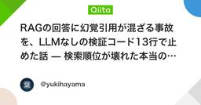

LLMタグが付けられた新着記事 - Qiita
LLMとは、「Large Language Model（大規模言語モデル）」の略で、大量のテキストデータを学習し、人間が話すような自然な言葉を理解、生成する人工知能モデルのことです。学習データには、主にインターネット上のウェブページや記事・書籍など、膨大なテキストデータを使用します。このデータから単語の出現パターンや文脈、意味の関連性などを統計的に学習し、言語の構造や意味を理解します。代表的なLLM現在開発の進められている主要なLLMは次のとおりです。GPT (Generative Pre-trained Transformer)OpenAIが開発し、ChatGPTとして広く知られていますGeminiGoogleが開発したLLMで、対話型AIとして提供されていますLLaMAMetaが開発したオープンソースのLLMClaudeAnthropicが開発したLLMLLMの活用事例LLMは、その高度な言語理解と生成能力により、私たちの日常生活やビジネスの様々な場面で活用され始めています。カスタマーサポート自動応答システムとして、顧客からの問い合わせに対応コンテンツ作成ブログ記事、SNS投稿、広告文などの自動生成プログラミングコードの生成、デバッグ支援。教育個別学習アシスタント、教材作成支援研究開発大規模なテキストデータからの情報抽出、分析LLMの課題LLMは非常に強力なツールですが、現時点では誤った情報（ハルシネーション）を生成したり、内容に偏見を含む可能性もあります。また、大量の計算リソースと消費エネルギーから、環境に与える影響も懸念されています。しかし、これらの課題を克服するための研究開発は進んでおり、今後さらに私たちの生活やビジネスにおいて活用されていくことが期待されています。リファレンスWikipedia: 大規模言語モデル - Wikipedia関連タグGPTGeminiLLaMAClaude
フィード


